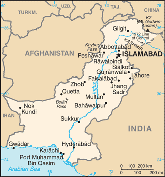
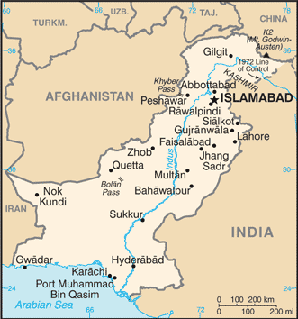

South Asia :: PAKISTAN
Introduction :: PAKISTAN
-
The Indus Valley civilization, one of the oldest in the world and dating back at least 5,000 years, spread over much of what is presently Pakistan. During the second millennium B.C., remnants of this culture fused with the migrating Indo-Aryan peoples. The area underwent successive invasions in subsequent centuries from the Persians, Greeks, Scythians, Arabs (who brought Islam), Afghans, and Turks. The Mughal Empire flourished in the 16th and 17th centuries; the British came to dominate the region in the 18th century. The separation in 1947 of British India into the Muslim state of Pakistan (with West and East sections) and largely Hindu India was never satisfactorily resolved, and India and Pakistan fought two wars and a limited conflict - in 1947-48, 1965, and 1999 respectively - over the disputed Kashmir territory. A third war between these countries in 1971 - in which India capitalized on Islamabad's marginalization of Bengalis in Pakistani politics - resulted in East Pakistan becoming the separate nation of Bangladesh. In response to Indian nuclear weapons testing, Pakistan conducted its own tests in mid-1998. India-Pakistan relations improved in the mid-2000s but have been rocky since the November 2008 Mumbai attacks and have been further strained by attacks in India by militants suspected of being based in Pakistan. Nawaz SHARIF took office as prime minister in 2013, marking the first time in Pakistani history that a democratically elected government completed a full term and transitioned to a successive democratically elected government. Pakistan has been engaged in a decades-long armed conflict with militant groups that target government institutions and civilians, including the Tehrik-e-Taliban Pakistan (TTP) and other militant networks.
Geography :: PAKISTAN
-
Southern Asia, bordering the Arabian Sea, between India on the east and Iran and Afghanistan on the west and China in the north30 00 N, 70 00 EAsiatotal: 796,095 sq kmland: 770,875 sq kmwater: 25,220 sq kmcountry comparison to the world: 37slightly more than five times the size of Georgia; slightly less than twice the size of Californiatotal: 7,257 kmborder countries (4): Afghanistan 2,670 km, China 438 km, India 3,190 km, Iran 959 km1,046 kmterritorial sea: 12 nmcontiguous zone: 24 nmexclusive economic zone: 200 nmcontinental shelf: 200 nm or to the edge of the continental marginmostly hot, dry desert; temperate in northwest; arctic in northdivided into three major geographic areas: the northern highlands, the Indus River plain in the center and east, and the Balochistan Plateau in the south and westmean elevation: 900 melevation extremes: lowest point: Arabian Sea 0 mhighest point: K2 (Mt. Godwin-Austen) 8,611 marable land, extensive natural gas reserves, limited petroleum, poor quality coal, iron ore, copper, salt, limestoneagricultural land: 35.2%arable land 27.6%; permanent crops 1.1%; permanent pasture 6.5%forest: 2.1%other: 62.7% (2011 est.)202,000 sq km (2012)the Indus River and its tributaries attract most of the settlement, with Punjab province the most densely populatedfrequent earthquakes, occasionally severe especially in north and west; flooding along the Indus after heavy rains (July and August)water pollution from raw sewage, industrial wastes, and agricultural runoff; limited natural freshwater resources; most of the population does not have access to potable water; deforestation; soil erosion; desertificationparty to: Biodiversity, Climate Change, Climate Change-Kyoto Protocol, Desertification, Endangered Species, Environmental Modification, Hazardous Wastes, Law of the Sea, Marine Dumping, Ozone Layer Protection, Ship Pollution, Wetlandssigned, but not ratified: Marine Life Conservationcontrols Khyber Pass and Bolan Pass, traditional invasion routes between Central Asia and the Indian Subcontinent
People and Society :: PAKISTAN
-
204,924,861 (July 2017 est.)note: provisional results of Pakistan's 2017 national census estimate the country's total population to be 207,774,000country comparison to the world: 6noun: Pakistani(s)adjective: PakistaniPunjabi 44.7%, Pashtun (Pathan) 15.4%, Sindhi 14.1%, Sariaki 8.4%, Muhajirs 7.6%, Balochi 3.6%, other 6.3%Punjabi 48%, Sindhi 12%, Saraiki (a Punjabi variant) 10%, Pashto (alternate name, Pashtu) 8%, Urdu (official) 8%, Balochi 3%, Hindko 2%, Brahui 1%, English (official; lingua franca of Pakistani elite and most government ministries), Burushaski, and other 8%Muslim (official) 96.4% (Sunni 85-90%, Shia 10-15%), other (includes Christian and Hindu) 3.6% (2010 est.)0-14 years: 31.36% (male 33,005,623/female 31,265,463)15-24 years: 21.14% (male 22,337,897/female 20,980,455)25-54 years: 37.45% (male 39,846,417/female 36,907,683)55-64 years: 5.57% (male 5,739,817/female 5,669,495)65 years and over: 4.48% (male 4,261,917/female 4,910,094) (2017 est.)total dependency ratio: 65.3youth dependency ratio: 57.9elderly dependency ratio: 7.4potential support ratio: 13.5 (2015 est.)total: 23.8 yearsmale: 23.7 yearsfemale: 23.8 years (2017 est.)country comparison to the world: 1671.43% (2017 est.)country comparison to the world: 8121.9 births/1,000 population (2017 est.)country comparison to the world: 746.3 deaths/1,000 population (2017 est.)country comparison to the world: 150-1.3 migrant(s)/1,000 population (2017 est.)country comparison to the world: 147the Indus River and its tributaries attract most of the settlement, with Punjab province the most densely populatedurban population: 39.7% of total population (2017)rate of urbanization: 2.77% annual rate of change (2015-20 est.)Karachi 16.618 million; Lahore 8.741 million; Faisalabad 3.567 million; Rawalpindi 2.506 million; Multan 1.921 million; ISLAMABAD (capital) 1.365 million (2015)at birth: 1.05 male(s)/female0-14 years: 1.06 male(s)/female15-24 years: 1.06 male(s)/female25-54 years: 1.08 male(s)/female55-64 years: 1.01 male(s)/female65 years and over: 0.88 male(s)/femaletotal population: 1.06 male(s)/female (2016 est.)23.4 yearsnote: median age at first birth among women 25-29 (2012/13 est.)178 deaths/100,000 live births (2015 est.)country comparison to the world: 53total: 52.1 deaths/1,000 live birthsmale: 55.2 deaths/1,000 live birthsfemale: 48.8 deaths/1,000 live births (2017 est.)country comparison to the world: 25total population: 68.1 yearsmale: 66.1 yearsfemale: 70.1 years (2017 est.)country comparison to the world: 1682.62 children born/woman (2017 est.)country comparison to the world: 7535.4% (2012/13)2.6% of GDP (2014)country comparison to the world: 1870.81 physicians/1,000 population (2014)0.6 beds/1,000 population (2012)improved:urban: 93.9% of populationrural: 89.9% of populationtotal: 91.4% of populationunimproved:urban: 6.1% of populationrural: 10.1% of populationtotal: 8.6% of population (2015 est.)improved:urban: 83.1% of populationrural: 51.1% of populationtotal: 63.5% of populationunimproved:urban: 16.9% of populationrural: 48.9% of populationtotal: 36.5% of population (2015 est.)0.1% (2016 est.)country comparison to the world: 107130,000 (2016 est.)country comparison to the world: 355,500 (2016 est.)country comparison to the world: 29degree of risk: highfood or waterborne diseases: bacterial diarrhea, hepatitis A and E, and typhoid fevervectorborne diseases: dengue fever and malariaanimal contact disease: rabies (2016)8.6% (2016)country comparison to the world: 15031.6% (2012)country comparison to the world: 112.7% of GDP (2015)country comparison to the world: 164definition: age 15 and over can read and writetotal population: 57.9%male: 69.5%female: 45.8% (2015 est.)total: 8 yearsmale: 9 yearsfemale: 7 years (2015)total: 8.6%male: 8%female: 10.6% (2014 est.)country comparison to the world: 115
Government :: PAKISTAN
-
conventional long form: Islamic Republic of Pakistanconventional short form: Pakistanlocal long form: Jamhuryat Islami Pakistanlocal short form: Pakistanformer: West Pakistanetymology: the word "pak" means "pure" in Persian or Pashto, while the Persian suffix "-stan" means "place of" or "country," so the word Pakistan literally means "Land of the Pure"federal parliamentary republicname: Islamabadgeographic coordinates: 33 41 N, 73 03 Etime difference: UTC+5 (10 hours ahead of Washington, DC, during Standard Time)4 provinces, 1 territory*, and 1 capital territory**; Balochistan, Federally Administered Tribal Areas*, Islamabad Capital Territory**, Khyber Pakhtunkhwa (formerly North-West Frontier Province), Punjab, Sindhnote: the Pakistani-administered portion of the disputed Jammu and Kashmir region consists of 2 administrative entities: Azad Kashmir and Gilgit-Baltistan14 August 1947 (from British India)Pakistan Day (also referred to as Pakistan Resolution Day or Republic Day), 23 March (1940); note - commemorates both the adoption of the Lahore Resolution by the All-India Muslim League during its 22-24 March 1940 session, which called for the creation of independent Muslim states, and the adoption of the first constitution of Pakistan on 23 March 1956 during the transition to the Islamic Republic of Pakistanhistory: several previous; latest endorsed 12 April 1973, passed 19 April 1973, entered into force 14 August 1973 (suspended and restored several times)amendments: proposed by the Senate or by the National Assembly; passage requires at least two-thirds majority vote of the membership of both houses; amended many times, last in 2015 (2017)common law system with Islamic law influenceaccepts compulsory ICJ jurisdiction with reservations; non-party state to the ICCtcitizenship by birth: yescitizenship by descent: at least one parent must be a citizen of Pakistandual citizenship recognized: yes, but limited to select countriesresidency requirement for naturalization: 4 out of the previous 7 years and including the 12 months preceding application18 years of age; universal; note - there are joint electorates and reserved parliamentary seats for women and non-Muslimschief of state: President Mamnoon HUSSAIN (since 9 September 2013)head of government: Prime Minister Shahid Khaqan ABBASI (since 1 August 2017); Prime Minister Mohammad Nawaz SHARIF resigned 7/28/17cabinet: Cabinet appointed by the president upon the advice of the prime ministerelections/appointments: president indirectly elected by the Electoral College consisting of members of the Senate, National Assembly, and provincial assemblies for a 5-year term (limited to 2 consecutive terms); election last held on 9 September 2013 (next to be held in 2018); prime minister elected by the National Assemblyelection results: Mamnoon HUSSAIN elected president; Mamnoon HUSSAIN (PML-N) 432 votes, Wajihuddin AHMED (PTI) 77 votesdescription: bicameral Parliament or Majlis-e-Shoora consists of the Senate (104 seats; members indirectly elected by the 4 provincial assemblies and the territories' representatives by proportional representation vote; members serve 6-year terms with one-half of the membership renewed every 3 years) and the National Assembly (342 seats; 272 members directly elected in single-seat constituencies by simple majority vote and 70 members - 60 women and 10 non-Muslims - directly elected by proportional representation vote; all members serve 5-year terms)elections: Senate - last held on 5 March 2015 (next to be held in March 2018); National Assembly - last held on 11 May 2013 (next to be held by 2018)election results: Senate - percent of vote by party - NA; seats by party - PPPP 27, PML-N 26, MQM 8, ANP 6, PTI 7, JUI-F 5, PML-Q 4, BNP-A 2, NP 1, PML-F 1, other 7, independent 10; National Assembly - percent of votes by party - NA; seats by party - PML-N 126, PPPP 31, PTI 28, MQM 18, JUI-F 10, PML-F 5, other 22, independent 25, unfilled seats 7; 60 seats reserved for women, 10 seats reserved for non-Muslims; seats by party as of July 2016 (includes women and non-Muslim seats) - PML-N 188, PPPP 46, PTI 33, MQM 24, JUI-F 13, PML-F 5, other 21, independent 12highest court(s): Supreme Court of Pakistan (consists of the chief justice and 16 judges)judge selection and term of office: justices nominated by an 8-member parliamentary committee upon the recommendation of the Judicial Commission (a 9-member body of judges and other judicial professionals), and appointed by the president of Pakistan; justices can serve until age 65subordinate courts: High Courts; Federal Shariat Court; provincial and district civil and criminal courts; specialized courts for issues such as taxation, banking, customs, etc.Awami National Party or ANP [Mian Iftikhar HUSSAIN]Balochistan National Party-Awami or BNP-A [Mir Israr Ullah ZEHRI]Balochistan National Party-Mengal or BNP-M [Sardar Akhtar Jan MENGAL]Jamaat-i Islami or JI [Sirajul HAQ]Jamiat-i Ulema-i Islam Fazl-ur Rehman or JUI-F [Fazlur REHMAN]Muttahida Quami Movement or MQM [Farooq SATTAR]Muttahida Quami Movement-London or MQM-L [Nadeem NUSRAT]Pakhtun khwa Milli Awami Party or PkMAP [Mahmood Khan ACHAKZAI]Pakistan Muslim League-Functional or PML-F [Pir PAGARO or Syed Shah Mardan SHAH-II]Pakistan Muslim League-Nawaz or PML-N [Nawaz SHARIF]Pakistan Peoples Party Parliamentarians or PPPP [Bilawal Bhutto ZARDARI and Asif Ali ZARDARI]Pakistan Tehrik-e Insaaf or PTI [Imran KHAN]Pak Sarzameen Party or PSP [Mustafa KAMAL]Quami Watan Party or QWP [Aftab Ahmed Khan SHERPAO]note: political alliances in Pakistan shift frequentlyPakistan Ulema Council or PUCother: military; landowners; industrialists; small merchantsADB, ARF, ASEAN (dialogue partner), C, CICA, CP, D-8, ECO, FAO, G-11, G-24, G-77, IAEA, IBRD, ICAO, ICC (national committees), ICRM, IDA, IDB, IFAD, IFC, IFRCS, IHO, ILO, IMF, IMO, IMSO, Interpol, IOC, IOM, IPU, ISO, ITSO, ITU, ITUC (NGOs), MIGA, MINURSO, MONUSCO, NAM, OAS (observer), OIC, OPCW, PCA, SAARC, SACEP, SCO (observer), UN, UNAMID, UNCTAD, UNESCO, UNHCR, UNIDO, UNMIL, UNOCI, UNWTO, UPU, WCO, WFTU (NGOs), WHO, WIPO, WMO, WTOchief of mission: Ambassador Aizaz Ahmad CHAUDHRY (since 24 April 2017)chancery: 3517 International Court NW, Washington, DC 20008telephone: [1] (202) 243-6500FAX: [1] (202) 686-1534consulate(s) general: Chicago, Houston, Los Angeles, New Yorkconsulate(s): Louisville (KY), San Franciscochief of mission: Ambassador David M. HALE (since 3 December 2015)embassy: Diplomatic Enclave, Ramna 5, Islamabadmailing address: 8100 Islamabad Place, Washington, DC 20521-8100telephone: [92] (51) 208-0000/[92] (51) 201-4000FAX: [92] (51) 233-8071consulate(s) general: Karachi, Lahoreconsulate(s): Peshawargreen with a vertical white band (symbolizing the role of religious minorities) on the hoist side; a large white crescent and star are centered in the green field; the crescent, star, and color green are traditional symbols of Islamstar and crescent, jasmine; national colors: green, whitename: "Qaumi Tarana" (National Anthem)lyrics/music: Abu-Al-Asar Hafeez JULLANDHURI/Ahmed Ghulamali CHAGLAnote: adopted 1954; also known as "Pak sarzamin shad bad" (Blessed Be the Sacred Land)
Economy :: PAKISTAN
-
Decades of internal political disputes and low levels of foreign investment have led to slow growth and underdevelopment in Pakistan. Pakistan has a large English-speaking population. Nevertheless, a challenging security environment, electricity shortages, and a burdensome investment climate have deterred investors. Agriculture accounts for one-fifth of output and two-fifths of employment. Textiles and apparel account for most of Pakistan's export earnings; Pakistan's failure to diversify its exports has left the country vulnerable to shifts in world demand. Pakistan’s GDP growth has gradually increased since 2012. Official unemployment was 6.1% in 2016, but this fails to capture the true picture, because much of the economy is informal and underemployment remains high. Human development continues to lag behind most of the region.In 2013, Pakistan embarked on a $6.3 billion IMF Extended Fund Facility, which focused on reducing energy shortages, stabilizing public finances, increasing revenue collection, and improving its balance of payments position. The program concluded in September 2016. Although Pakistan missed several structural reform criteria, it restored macroeconomic stability, improved its credit rating, and boosted growth. The Pakistani rupee, after heavy depreciation in 2013, remained relatively stable against the US dollar in 2016. Low global oil prices in 2016 contributed to a narrowing current account deficit and lower inflation. Remittances from overseas workers continued to be a key revenue source, also mitigating the impact of the lack of foreign investment and a growing trade deficit on the country’s current account.Pakistan must continue to address several longstanding issues, including expanding investment in education and healthcare, adapting to the effects of climate change and natural disasters, improving the country’s business environment, reducing dependence on foreign donors, and widening the country’s tax base. Given demographic challenges, Pakistan’s leadership will be pressed to implement economic reforms, promote further development of the energy sector, and attract foreign investment to support sufficient economic growth necessary to employ its growing and rapidly urbanizing population, much of which is under the age of 25.In an effort to boost development, Pakistan and China are implementing the “China-Pakistan Economic Corridor,” a $46 billion investment program targeted towards the energy sector and other infrastructure projects that Islamabad and Beijing had agreed on in early 2013.$986.3 billion (2016 est.)$931.9 billion (2015 est.)$885.9 billion (2014 est.)note: data are in 2016 dollarsdata are for fiscal yearscountry comparison to the world: 26$278.9 billion (2015 est.)4.5% (2016 est.)4.1% (2015 est.)4.1% (2014 est.)note: data are for fiscal yearscountry comparison to the world: 44$5,100 (2016 est.)$5,000 (2015 est.)$4,900 (2014 est.)note: data are in 2016 dollarsdata are for fiscal yearscountry comparison to the world: 17113.8% of GDP (2016 est.)14.7% of GDP (2015 est.)13.4% of GDP (2014 est.)note: data are for fiscal yearscountry comparison to the world: 140household consumption: 80%government consumption: 11.3%investment in fixed capital: 14%investment in inventories: 1.6%exports of goods and services: 9.1%imports of goods and services: -16% (2016 est.)agriculture: 24.6%industry: 19.4%services: 56% (2016 est.)cotton, wheat, rice, sugarcane, fruits, vegetables; milk, beef, mutton, eggstextiles and apparel, food processing, pharmaceuticals, surgical instruments, construction materials, paper products, fertilizer, shrimp5.8% (2016 est.)country comparison to the world: 3862.54 millionnote: extensive export of labor, mostly to the Middle East, and use of child labor (2016 est.)country comparison to the world: 10agriculture: 42.3%industry: 22.6%services: 35.1% (FY2015 est.)6% (2016 est.)5.9% (2015 est.)note: substantial underemployment existscountry comparison to the world: 8329.5% (FY2013 est.)lowest 10%: 4%highest 10%: 26.1% (FY2013)30.7 (FY2013)30.9 (FY2011)country comparison to the world: 123revenues: $42.45 billionexpenditures: $55.32 billionnote: data are for fiscal years (2016 est.)14.9% of GDP (2016 est.)country comparison to the world: 190-4.5% of GDP (2016 est.)country comparison to the world: 14959.5% of GDP (2016 est.)57.4% of GDP (2015 est.)country comparison to the world: 731 July - 30 June2.9% (2016 est.)2.5% (2015 est.)country comparison to the world: 1605.75% (15 November 2016)6% (15 November 2015)country comparison to the world: 716.94% (31 December 2016 est.)8.37% (31 December 2015 est.)country comparison to the world: 116$103.5 billion (31 December 2016 est.)$88.81 billion (31 December 2015 est.)country comparison to the world: 36$126.8 billion (31 December 2016 est.)$109.7 billion (31 December 2015 est.)country comparison to the world: 52$145.2 billion (31 December 2016 est.)$127.6 billion (31 December 2015 est.)country comparison to the world: 50$43.68 billion (31 December 2012 est.)$32.76 billion (31 December 2011 est.)$38.17 billion (31 December 2010 est.)country comparison to the world: 56$-4.867 billion (2016 est.)$-2.122 billion (2015 est.)country comparison to the world: 174$21.71 billion (2016 est.)$22.71 billion (2015 est.)country comparison to the world: 68textiles (garments, bed linen, cotton cloth, yarn), rice, leather goods, sporting goods, chemicals, manufactures, surgical instruments, carpets and rugsUS 16.3%, China 7.6%, UK 7.4%, Afghanistan 6.5%, Germany 5.7% (2016)$41.62 billion (2016 est.)$39.38 billion (2015 est.)country comparison to the world: 53petroleum, petroleum products, machinery, plastics, transportation equipment, edible oils, paper and paperboard, iron and steel, teaChina 29.1%, UAE 13.2%, Indonesia 4.4%, US 4.3%, Japan 4.2% (2016)$22.05 billion (31 December 2016 est.)$20.05 billion (31 December 2015 est.)country comparison to the world: 61$70.45 billion (31 December 2016 est.)$65.48 billion (31 December 2015 est.)country comparison to the world: 58$39.06 billion (31 December 2016 est.)$32.13 billion (31 December 2015 est.)country comparison to the world: 61$2.094 billion (31 December 2016 est.)$2.009 billion (31 December 2015 est.)country comparison to the world: 81Pakistani rupees (PKR) per US dollar -104.769 (2016 est.)104.769 (2015 est.)102.769 (FY2014 est.)101.1 (FY2013 est.)93.4 (2012 est.)
Energy :: PAKISTAN
-
population without electricity: 49,500,000electrification - total population: 73%electrification - urban areas: 91%electrification - rural areas: 62% (2013)104.5 billion kWh (2015 est.)country comparison to the world: 3485.9 billion kWh (2015 est.)country comparison to the world: 350 kWh (2016 est.)country comparison to the world: 183452 million kWh (2016 est.)country comparison to the world: 8322.83 million kW (2015 est.)country comparison to the world: 3861.8% of total installed capacity (2015 est.)country comparison to the world: 1243% of total installed capacity (2015 est.)country comparison to the world: 2631.8% of total installed capacity (2015 est.)country comparison to the world: 685.7% of total installed capacity (2015 est.)country comparison to the world: 9185,500 bbl/day (2016 est.)country comparison to the world: 46493.2 bbl/day (2014 est.)country comparison to the world: 76166,000 bbl/day (2014 est.)country comparison to the world: 33350.6 million bbl (1 January 2017 es)country comparison to the world: 55259,500 bbl/day (2014 est.)country comparison to the world: 46517,000 bbl/day (2015 est.)country comparison to the world: 3420,720 bbl/day (2014 est.)country comparison to the world: 71247,300 bbl/day (2014 est.)country comparison to the world: 2939.3 billion cu m (2015 est.)country comparison to the world: 2348.06 billion cu m (2015 est.)country comparison to the world: 230 cu m (2016 est.)country comparison to the world: 1661.37 billion cu m (2015 est.)country comparison to the world: 55542.5 billion cu m (1 January 2017 es)country comparison to the world: 32145 million Mt (2013 est.)country comparison to the world: 33
Communications :: PAKISTAN
-
total subscriptions: 3,067,911subscriptions per 100 inhabitants: 2 (July 2016 est.)country comparison to the world: 31total: 136,489,014subscriptions per 100 inhabitants: 68 (July 2016 est.)country comparison to the world: 11general assessment: the telecommunications infrastructure is improving, with investments in mobile-cellular networks increasing, but fixed-line subscriptions declining; system consists of microwave radio relay, coaxial cable, fiber-optic cable, cellular, and satellite networks; 3G and 4G mobile services introduceddomestic: mobile-cellular subscribership has skyrocketed; more than 90% of Pakistanis live within areas that have cell phone coverage; fiber-optic networks are being constructed throughout the country to increase broadband access, though broadband penetration in Pakistan is still relatively lowinternational: country code - 92; landing point for the SEA-ME-WE-3 and SEA-ME-WE-4 submarine cable systems that provide links to Asia, the Middle East, and Europe; satellite earth stations - 3 Intelsat (1 Atlantic Ocean and 2 Indian Ocean); 3 operational international gateway exchanges (1 at Karachi and 2 at Islamabad); microwave radio relay to neighboring countries (2015)media is government regulated; 1 dominant state-owned TV broadcaster, Pakistan Television Corporation (PTV), operates a network consisting of 8 channels; private TV broadcasters are permitted; to date 69 foreign satellite channels are operational; the state-owned radio network operates more than 30 stations; nearly 200 commercially licensed, privately owned radio stations provide programming mostly limited to music and talk shows (2017).pktotal: 31,338,715percent of population: 15.5% (July 2016 est.)country comparison to the world: 27
Transportation :: PAKISTAN
-
number of registered air carriers: 4inventory of registered aircraft operated by air carriers: 67annual passenger traffic on registered air carriers: 8,467,827annual freight traffic on registered air carriers: 183,177,313 mt-km (2015)AP (2016)151 (2013)country comparison to the world: 37total: 108over 3,047 m: 152,438 to 3,047 m: 201,524 to 2,437 m: 43914 to 1,523 m: 20under 914 m: 10 (2017)total: 432,438 to 3,047 m: 11,524 to 2,437 m: 9914 to 1,523 m: 9under 914 m: 24 (2013)23 (2013)gas 12,646 km; oil 2,576 km; refined products 1,087 km (2013)total: 11,881 kmbroad gauge: 11,492 km 1.676-m gauge (293 km electrified)narrow gauge: 389 km 1.000-m gauge (2015)country comparison to the world: 22total: 263,942 kmpaved: 185,063 km (includes 708 km of expressways)unpaved: 78,879 km (2014)country comparison to the world: 21total: 11by type: bulk carrier 5, cargo 3, petroleum tanker 3registered in other countries: 11 (Comoros 5, Marshall Islands 1, Moldova 1, Panama 3, Saint Kitts and Nevis 1) (2010)country comparison to the world: 111major seaport(s): Karachi, Port Muhammad Bin Qasimcontainer port(s) (TEUs): Karachi (1,545,434)LNG terminal(s) (import): Port Qasim
Military and Security :: PAKISTAN
-
3.56% of GDP (2016)3.54% of GDP (2015)3.48% of GDP (2014)3.47% of GDP (2013)3.48% of GDP (2012)country comparison to the world: 21Pakistan Army (includes National Guard), Pakistan Navy (includes Maritime Security Agency), Pakistan Air Force (Pakistan Fiza'ya) (2015)16-23 years of age for voluntary military service; soldiers cannot be deployed for combat until age 18; women serve in all three armed forces; reserve obligation to age 45 for enlisted men, age 50 for officers (2017)
Transnational Issues :: PAKISTAN
-
various talks and confidence-building measures cautiously have begun to defuse tensions over Kashmir, particularly since the October 2005 earthquake in the region; Kashmir nevertheless remains the site of the world's largest and most militarized territorial dispute with portions under the de facto administration of China (Aksai Chin), India (Jammu and Kashmir), and Pakistan (Azad Kashmir and Northern Areas); UN Military Observer Group in India and Pakistan has maintained a small group of peacekeepers since 1949; India does not recognize Pakistan's ceding historic Kashmir lands to China in 1964; India and Pakistan have maintained their 2004 cease-fire in Kashmir and initiated discussions on defusing the armed standoff in the Siachen glacier region; Pakistan protests India's fencing the highly militarized Line of Control and construction of the Baglihar Dam on the Chenab River in Jammu and Kashmir, which is part of the larger dispute on water sharing of the Indus River and its tributaries; to defuse tensions and prepare for discussions on a maritime boundary, India and Pakistan seek technical resolution of the disputed boundary in Sir Creek estuary at the mouth of the Rann of Kutch in the Arabian Sea; Pakistani maps continue to show the Junagadh claim in India's Gujarat State; since 2002, with UN assistance, Pakistan has repatriated 3.8 million Afghan refugees, leaving about 2.6 million; Pakistan has sent troops across and built fences along some remote tribal areas of its treaty-defined Durand Line border with Afghanistan, which serve as bases for foreign terrorists and other illegal activities; Afghan, Coalition, and Pakistan military meet periodically to clarify the alignment of the boundary on the ground and on mapsrefugees (country of origin): 2 - 2.4 million (1.4 million registered, 600,000 - 1.0 million undocumented) (Afghanistan) (2017)IDPs: 464,000 (primarily those who remain displaced by counter-terrorism and counter-insurgency operations and violent conflict between armed non-state groups in the Federally Administered Tribal Areas and Khyber-Paktunkwa Province; more than 1 million displaced in northern Waziristan in 2014; individuals also have been displaced by repeated monsoon floods) (2016)current situation: Pakistan is a source, transit, and destination country for men, women, and children subjected to forced labor and sex trafficking; the largest human trafficking problem is bonded labor in agriculture, brickmaking and, to a lesser extent, fishing, mining and carpet-making; children are bought, sold, rented, and placed in forced begging rings, domestic service, small shops, brick-making factories, or prostitution; militant groups also force children to spy, fight, or die as suicide bombers, kidnapping the children or getting them from poor parents through sale or coercion; women and girls are forced into prostitution or marriages; Pakistani adults migrate to the Gulf States and African and European states for low-skilled jobs and sometimes become victims of forced labor, debt bondage, or prostitution; foreign adults and children, particularly from Afghanistan, Bangladesh, and Sri Lanka, may be subject to forced labor, and foreign women may be sex trafficked in Pakistan, with refugees and ethnic minorities being most vulnerabletier rating: Tier 2 Watch List – Pakistan does not fully comply with the minimum standards for the elimination of trafficking; however, it is making significant efforts to do so; the government lacks political will and capacity to fully address human trafficking, as evidenced by ineffective law enforcement efforts, official complicity, penalization of victims, and the continued conflation of migrant smuggling and human trafficking by many officials; not all forms of trafficking are prohibited; an anti-trafficking bill drafted in 2013 to address gaps in existing legislation remains pending, and a national action plan drafted in 2014 is not finalized; feudal landlords and brick kiln owners use their political influence to protect their involvement in bonded labor, while some police personnel have taken bribes to ignore prostitution that may have included sex trafficking; authorities began to use standard procedures for the identification and referral of trafficking victims, but it is not clear how widely these methods were practiced; in other instances, police were reluctant to assist NGOs with rescues and even punished victims for crimes committed as a direct result of being trafficked (2015)significant transit area for Afghan drugs, including heroin, opium, morphine, and hashish, bound for Iran, Western markets, the Gulf States, Africa, and Asia; financial crimes related to drug trafficking, terrorism, corruption, and smuggling remain problems; opium poppy cultivation estimated to be 930 hectares in 2015; federal and provincial authorities continue to conduct anti-poppy campaigns that utilizes forced eradication, fines, and arrests